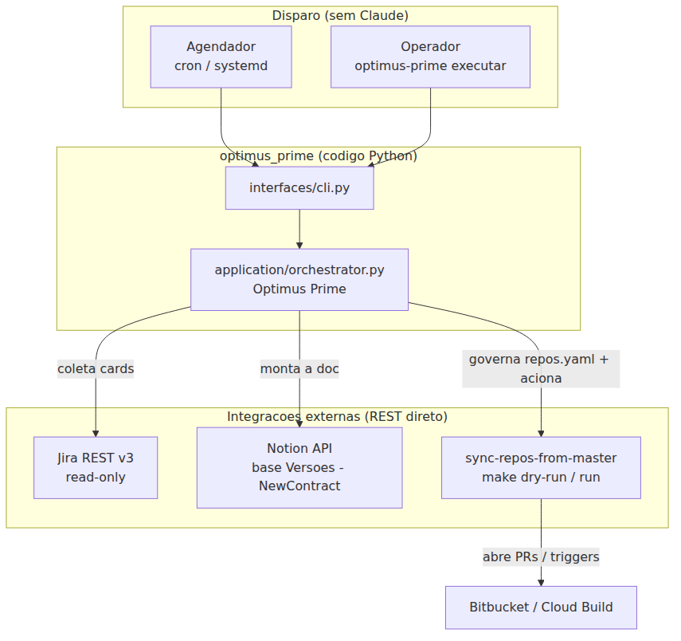
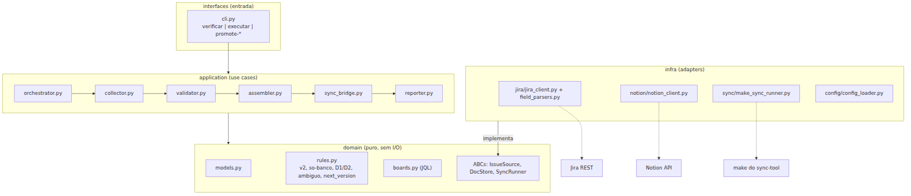
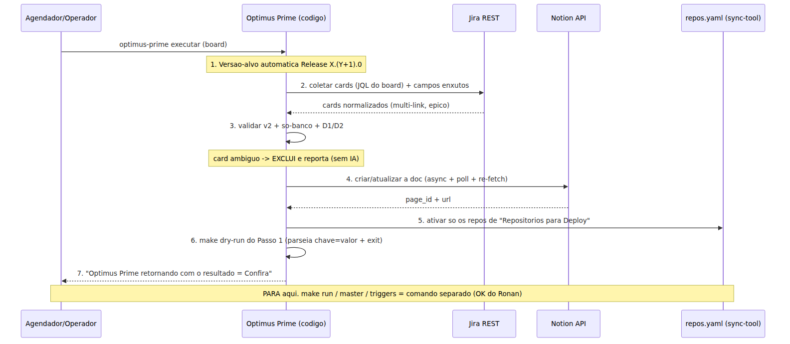
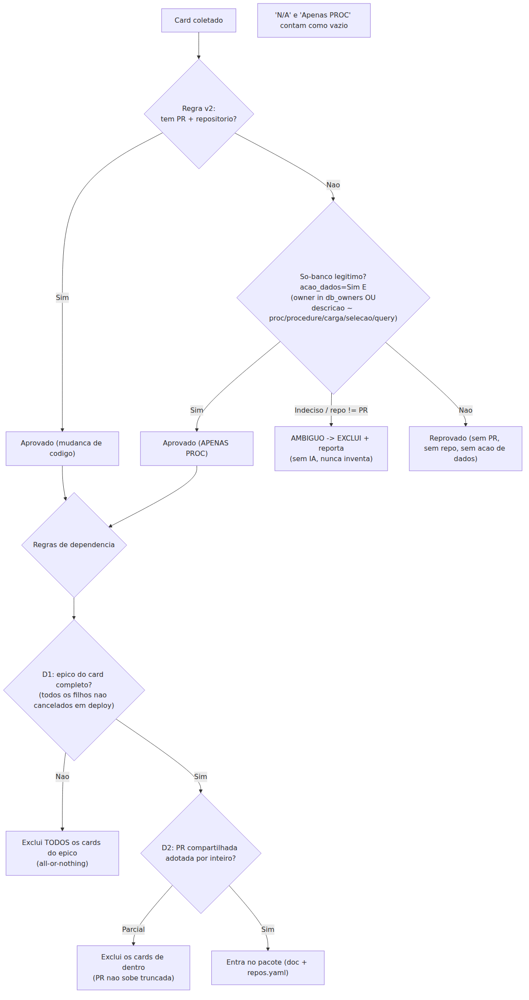
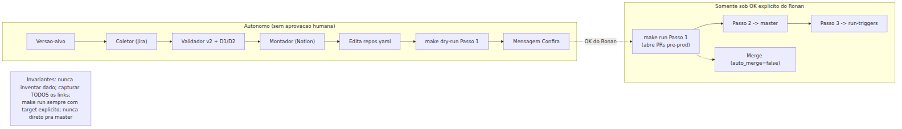
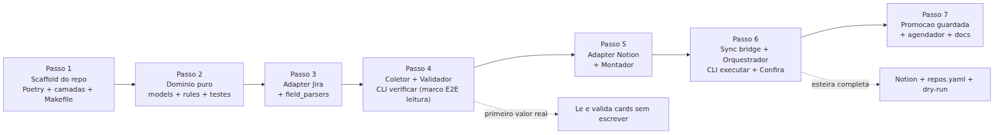

Hoje o workflow-automation-management e um conjunto de instrucoes (skills em
Markdown) que so roda dentro do Claude Code, com os MCPs Atlassian e Notion ligados por
OAuth manual. Ele documenta releases no Notion e prepara a sincronizacao de branches acionando o
sync-repos-from-master.
Este documento define um gemeo autonomo: o mesmo papel "Optimus Prime", porem em
codigo real, rodando como pipeline sem o Claude no meio. O sistema atual
e preservado (fica como a versao assistida por IA); criamos um repositorio
novo, separado, espelhando a arquitetura limpa ja provada no sync-repos-from-master.
| Aspecto | Hoje (assistido por Claude) | Novo (pipeline autonomo) |
|---|---|---|
| Motor | Claude Code lendo skills | Codigo Python (Clean Architecture) |
| Jira / Notion | MCP + OAuth por pessoa | REST direto com token em .env |
| Disparo | Comando no chat | CLI + agendador (cron/systemd) |
| Card ambiguo | Pergunta ao humano | Exclui e reporta (deterministico, sem IA) |
| Deploy (sync) | make sob OK do Ronan | Igual: make run/master/triggers sob OK |
sync-repos-from-master.executar vai so ate o
make dry-run do Passo 1 e emite a mensagem Optimus Prime retornando com o resultado =
Confira; make run, master e triggers ficam guardados sob OK do Ronan.db_owners na
configuracao.O "Optimus Prime" em codigo e o cerebro; os bracos continuam sendo Jira (leitura), Notion (escrita) e
o sync-repos-from-master (deploy). O que antes exigia o Claude operando MCPs agora sao
chamadas REST diretas e a orquestracao dos make do sync-tool.

Clean/Hexagonal identica a referencia: direcao de dependencia
interfaces → application → domain ← infra. O domain define
contratos (ABCs) e regras puras sem I/O; o infra implementa os contratos (adapters REST); o
application orquestra recebendo os contratos por injecao de dependencia.

optimus_prime.Padroes reusados do sync-repos-from-master: CLI com argparse e
roteamento por primeiro argumento; @dataclass(slots=True) + Literal para status;
BaseAdapter.safe_call() que converte falhas conhecidas em resultado normalizado sem quebrar o
lote; adapters com transport injetavel (testaveis sem rede); saida chave=valor +
exit code.
No executar de um board, a esteira roda de forma autonoma da coleta ate o
make dry-run do Passo 1, encerrando na mensagem unica Confira. A unica excecao
que interrompe e um erro; o card ambiguo nao pausa - e excluido e reportado.

Toda a decisao de elegibilidade e dependencia vira codigo deterministico e testavel (camada
domain/rules.py). A regra v2 (aprovar se tem PR+repositorio, ou se e legitimamente so-banco),
a heuristica so-banco, e as regras de dependencia D1 (epico incompleto) e D2 (PR compartilhada parcial)
sao aplicadas em sequencia; o card ambiguo e excluido e reportado.

A fronteira de autonomia e clara: tudo ate o make dry-run do Passo 1 roda sozinho; todo
make run (Passo 1 e 2), o merge, o master e as triggers (Passo 3) exigem OK explicito do
Ronan. O auto_merge permanece false; o make run sempre com
target explicito, nunca direto para a master.

A construcao e dividida em sete Passos sequenciais. O Passo 4 entrega o primeiro valor real (le e valida cards sem escrever nada) e o Passo 6 completa a esteira autonoma.

Criar o repositorio novo com o esqueleto de Clean Architecture, ferramentas de qualidade e
configuracao, espelhando o sync-repos-from-master. Nenhuma regra ainda; so a fundacao.
workflow-automation-pipeline (nome ajustavel) e o pacote src/optimus_prime.pyproject.toml (Poetry, Python 3.14): pyyaml; dev: pytest, pytest-cov, ruff, black.interfaces/ application/ domain/ infra/ shared/ tests/.Makefile: alvos setup lint format test verificar executar executar-todos promote-passo1 promote-master triggers..env.example, pipeline.yaml.example, deploy_requirements.yaml..githooks/pre-commit (deps-check + test com cobertura minima 80%); ruff+black configurados.Repo instalavel (make setup), make test verde vazio, lint/format limpos.
make setup e make test
rodam sem erro; estrutura de camadas criada; hook de pre-commit ativo.Dependencias: nenhuma.
Codificar todo o "cerebro de decisao" como funcoes puras e modelos, sem nenhum I/O - a parte mais critica e a que ganha os testes mais fortes.
domain/models.py: Card, Links (repositories e pull_requests como listas), DeployFields, Epic, ValidationResult, ReleaseDoc, ExecutionSummary.domain/boards.py: registro dos 3 boards com a JQL exata (incidentes 1o).domain/rules.py: eligibility_v2, so_banco_legitimo, is_ambiguous, d1_epico_incompleto, d2_pr_parcial, next_version."N/A" e "Apenas PROC" como vazio; deduplicar links.Modulo domain completo e coberto por testes; zero dependencia de rede.
domain proxima de 100%.Dependencias: Passo 1.
Falar com o Jira por REST direto (o que hoje o MCP faz), normalizando cada card no contrato do dominio, com atencao ao multi-link e a PR-por-referencia.
infra/jira/jira_client.py: urllib + transport injetavel; auth Basic (email:token); search por JQL e get issue pedindo so os campos necessarios.infra/jira/field_parsers.py: extrair TODOS os URLs de customfield_12399/12400; deduplicar; resolver "Pr no card PB-XXXX" herdando PR/repo.parent (epico) e, para D1, os filhos do epico e seus status.IssueSource do dominio.transport fake (respostas Jira gravadas) - sem rede.Adapter Jira testado que devolve Cards normalizados a partir de respostas reais gravadas.
Dependencias: Passo 2.
Primeiro marco de valor real: ler e validar cards de um board de verdade, sem escrever nada.
application/collector.py: monta a JQL do board, chama o IssueSource, normaliza.application/validator.py: aplica v2 + so-banco + D1/D2; separa aprovados/reprovados/excluidos/ambiguos.application/reporter.py: relatorio chave=valor + ExecutionSummary em execucoes/.interfaces/cli.py: comando verificar BOARD=<board> (dry, so leitura).make verificar BOARD=incidentes lista cards normalizados e a separacao de decisao, contra o
Jira real, sem tocar em Notion nem no YAML.
verificar roda fim-a-fim de
leitura e o resultado bate com a conferencia manual de um pacote conhecido.Dependencias: Passo 3.
Escrever/atualizar a pagina da versao no Notion no molde padrao, de forma idempotente.
infra/notion/notion_client.py: query da ultima versao (data_source), criar/atualizar pagina; escrita assincrona com poll + re-fetch de verificacao.DocStore.application/assembler.py: versao-alvo X.(Y+1).0; tabela (Item, Pull Requests, Banco, Infra, Merge); blocos fixos (Testes, Ambientes, Repositorios para Deploy, Participantes); todos os links por card.DocStore fake; testes do adapter com transport fake.Pagina montada corretamente na base de teste do Notion (1.111.0 (teste)).
Dependencias: Passo 4.
Fechar a esteira autonoma: governar o repos.yaml, rodar o make dry-run do
Passo 1 e emitir a mensagem Confira.
infra/sync/make_sync_runner.py: editar o repos.yaml em $SYNC_REPO_PATH (ativar so os repos de "Repositorios para Deploy", triggers comentados, resto comentado, repo faltando -> para e reporta); subprocess do make dry-run; parsear chave=valor + exit code.SyncRunner.application/orchestrator.py: encadeia versao-alvo -> coletor -> validador -> montador -> sync bridge (dry-run) -> relatorio.interfaces/cli.py: executar BOARD=<board> e executar-todos; emite a linha Confira + artefatos; grava execucoes/.erros/AAAA-MM-DD-slug.md.make executar BOARD=incidentes vai da coleta ao dry-run e encerra na mensagem
Confira, sem abrir nenhum PR.
execucoes/ gravado; nenhum make run disparado sozinho.Dependencias: Passo 5.
Entregar os comandos de promocao sob OK do Ronan, o agendamento e a documentacao do novo repo.
make promote-passo1 VERSAO=... (make run que abre os PRs pre-prod), promote-master (Passo 2), triggers (Passo 3) - todos guardados.auto_merge=false e target explicito sempre.systemd (ou cron) chamando make executar-todos no horario definido.README + spec do novo repo (estilo do sync-tool); opcional: nota no repo atual apontando para o pipeline.Promocao funcional sob comando; agendamento ativo; documentacao publicada.
promote-passo1 abre os PRs
(auto_merge=false); o agendador dispara o executar-todos; docs completas.Dependencias: Passo 6.
| Campo | Tipo | Observacao |
|---|---|---|
| card_id / title / issue_type / status | string | identidade do card |
| owner | {name, account_id} | assignee |
| product | string | customfield_11993 |
| epic | {key, summary} | parent (para D1) |
| links.repositories | lista de string | customfield_12399 - todos os links |
| links.pull_requests | lista de string | customfield_12400 - todos os links |
| deploy_fields.acao_dados | Sim/Nao | customfield_12297 |
| deploy_fields.merge_realizado | null | customfield_12401 (hoje vazio) |
| deploy_fields.apenas_proc / proc_name | bool / null | a extrair da descricao (backlog) |
| Item | Valor |
|---|---|
| Jira site / cloudId | bernhoeft.atlassian.net / f36e5519-1f88-4f71-a406-75326e86deda |
| Projeto / escopo | PB / read:jira-work (read-only) |
| Customfields | 12399 repo, 12400 PR, 12297 acao dados, 12401 merge, 11993 produto |
| Notion data_source | 23e19d89-2318-81ff-812d-000b6afb6b5a (props: Versao title, Tipo select) |
| Molde / base de teste | pagina 1.110.0 / 1.111.0 (teste) |
| Sync tool | $SYNC_REPO_PATH (default ../sync-repos-from-master) |
| Variavel | Uso |
|---|---|
| JIRA_EMAIL / JIRA_TOKEN | auth Basic no Jira REST |
| NOTION_TOKEN | Bearer na API do Notion |
| SYNC_REPO_PATH | caminho do sync-repos-from-master |
| Prioridade | Board | JQL |
|---|---|---|
| 1 | Incidentes | project = PB AND issuetype = Incidente AND status in ("Teste regressivo","Pronto para deploy") |
| 2 | Features | project = PB AND issuetype = Story AND summary !~ "Refatoracao" AND status in (...) |
| 3 | Refatoracao | project = PB AND issuetype = Story AND summary ~ "Refatoracao" AND status in (...) |
| Caso | O que valida | Resultado esperado |
|---|---|---|
| PB-5778 | So-banco legitimo (assignee de banco, descricao cita procedure, sem PR/repo) | Aprovado (APENAS PROC) |
| PB-5599 | PR-por-referencia (herda PR de PB-5651) | Aprovado (PR herdada conta) |
| PB-5159 | Filhos do mesmo epico compartilham as mesmas 3 PRs | PRs deduplicadas (contam uma vez) |
| PB-5768 | Epico all-or-nothing (38 filhos) incompleto | D1: exclui todos os cards do epico |
| D1 generico | Irmao do epico ainda em dev | Exclui o epico do pacote |
| D2 generico | PR compartilhada adotada parcialmente | Exclui os cards de dentro |
| Ambiguo | Repositorio diferente da PR, ou so-banco indeciso | Exclui + reporta (sem IA) |
| N/A / Apenas PROC | Valores tratados como vazio | Nao contam como link valido |
prerelease/teste_regressivo/master) a confirmar antes do run real.db_owners precisa ser mantido atualizado (quem e responsavel de banco).make executar BOARD=<board> roda sem Claude, da coleta ao dry-run, e emite Confira.repos.yaml governado a partir da doc.make run/master/triggers) so sob OK do Ronan; auto_merge=false.